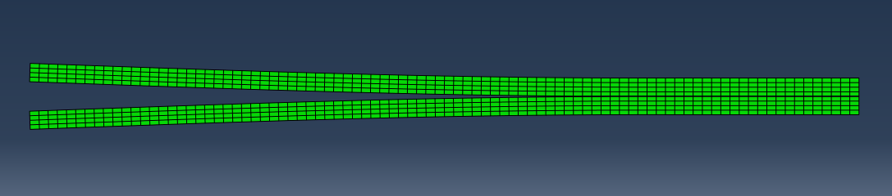
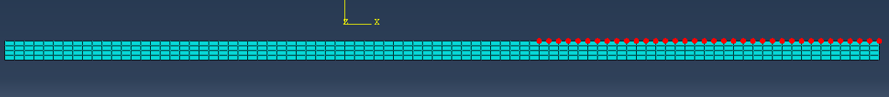
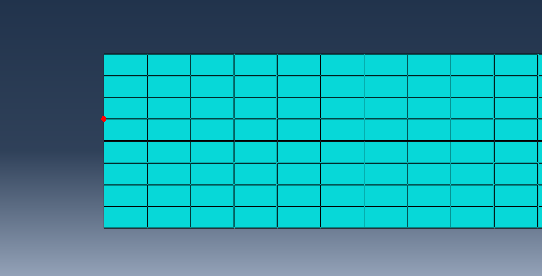

6.1 Debonding
Contents
- Exercise 6.1: Debonding of Double Cantilever Beam
- Credits
Exercise 6.1: Debonding of Double Cantilever Beam
Problem Description¶
Use displacement control to conduct a double cantilever beam fracture experiment simulation and then plot the traction-separation curve.

First, create two parts.
Create 2D Planar Deformable Shell Part, named Bot. In the Sketch, draw a rectangle by using the Create rectangle tool . The corners should be (0, 0), (9, 0.2).
The other part, named Top, should have corners at (0, 0.202), (9, 0.402).
Data files are available.
Assign Property¶
- Create material named
metal of type linear elastic with properties $E=$ 8e6, $\nu=$ 0.3.
- Create a
Solid Homogeneous section named MetalSection using the metal material.
- Assign the section to both parts
Top and Bot.
Assembly¶
- Since we have already given proper coordinates for each part, we can instance both of them without further configuration.
Create instance  using the two beam parts with an using the two beam parts with an Independent mesh.
Mesh and Create Sets¶
Assign the element type Plane Strain and toggle off Reduced integration (CPE4); the mesh control should be Quad/ Structured mesh.
Use Display Group to see only bottom beam. Seed the top and bottom edge with 90 elements, while the two sides have 4 elements; then create the mesh. (Hold Shift to multiply select.)
Create a set named BNODES from Tools→Sets→Create or you can create set from model tree. Type Node.
Select some nodes (half) along top edge from the right (see below). (Note: This node will not break in the simulation, and is the reference node sets.)

Now you can mesh the topbeam. Do the same as in step 2.
Create a few node sets for load definition later.
Create a Node set named fixed. Select the nodes at the right edge (see pics below).
Create a Node set named Dbot and select the node show below. (You may use the Box Zoom View to select the node)
Create a Node set named Dtop and select the node in the same position of Dbot at top beam (see below)
(Dbot and Dtop are the place where we will apply the displacement BC.)

Apply load/displacement and BC¶Here, we apply load/BC directly on the node, since that is actually how the finite element method works.
Create a General, Static step named Load, Toggle on Nlgeom, Maximum number of increament: 5000; Initial increment size: 0.005, maximum increment size: 0.015.
In the Initial step, apply a Displacement/Rotation BC on node set fix, toggling on U1 and U2. (Note: the tool is Select node set .)
In the Load step, apply Displacement/Rotation BC at node set Dbot and Dtop. For the Dbot, set U2 to be -0.16 and for the Dtop set U2 to be 0.16.
Define the interaction¶
Go to the Interaction module and select Create Interaction Property . Name it Cohesive and select the Contact type.
In the Edit Contact Property dialog box, Choose Mechanical Cohesive Behavior. Toggle on Specify the bonding nodes set in the Surface-to-surface Std interaction
Then go to Mechanical Damage and toggle on Specify damage evolution. In Initiation, input 800 to Normal only & Shear-1Only; input 0 in Shear-2.
In Evolution, toggle on type Energy with Linear softening; also select Specify mixed mode behavior of type Benzeggagh-Kenane.
Toggle on Specify power-law/BK exponent with a value of 1.75. For the Normal Fracture Energy, input 0.8; for the 1st Shear Fracture Energy, input 0.8; 2nd Shear Fracture Energy, input 0.
Finally select Mechanical→Geometric→Properties. Before we create interaction, we should define the two interaction surface, which is also the crack surface. Go to Tools→Surfaces→Create.
Name the top surface TopSurf and the bottom surface BotSurf. (You may need to zoom in to select both surfaces.)
Use the Create Interaction tool to create a Cohesive interaction of type Surface-to-surface contact (Standard) with TopSurf selected as the master surface (since the adjust nodes we define are at the bottom beam).
Now select the Slave type Surface for BotSurf.
In the Edit Interaction dialog box, select Node to Surface in the Discretization method
Toggle on Adjust slave nodes in set, select BNODE set.
Choose Cohesive in the Contact interaction property.
After the Interaction definition, you can see a yellow square along the interface.

Specify the History output¶Usually in the double cantilever beam experiment, we would like to get the traction-separation figure at the crack front. Go to *History Output* from the mode tree and select `Domain` Set: `Dtop`. Then we have the displacement vs reaction force relation at point `Dtop`.
- Toggle on
Displacement/U/U2 and Forces/RF/RF2.
Create and submit jobs.¶
Create the job named DCB, save it, and submit it.
Observe the stress distribution around the double cantilever beam. As well, you can draw the traction-separation plot by using the history output created.
|
Credits
Neal Davis, Ruizhi Li, and Binyue Hou developed these materials for Computational Science and Engineering at the University of Illinois at Urbana–Champaign.
 This content is available under a Creative Commons Attribution-NonCommercial 4.0 Unported License. This content is available under a Creative Commons Attribution-NonCommercial 4.0 Unported License.

|